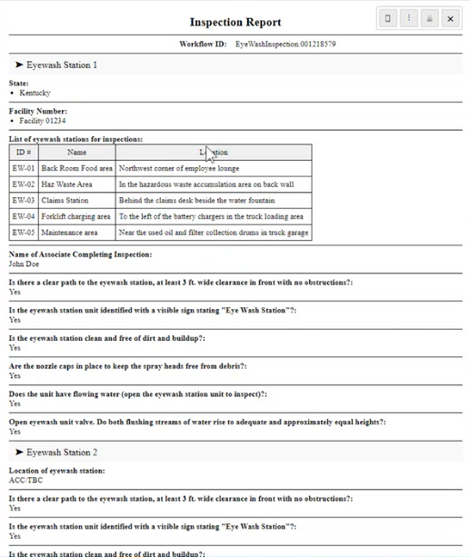

Once you are on a form with a Data View table, click the Print Icon. The Inspection Report displays with the Data View table in the form.

Data view tables with many rows may not display well in the print view option. Whether the print view is on portrait paper or landscape paper, the rows will be spaced out to fit the width of one page. Data View tables with many columns will print well as the table headers will repeat on subsequent pages and the columns heights will be optimally spaced.